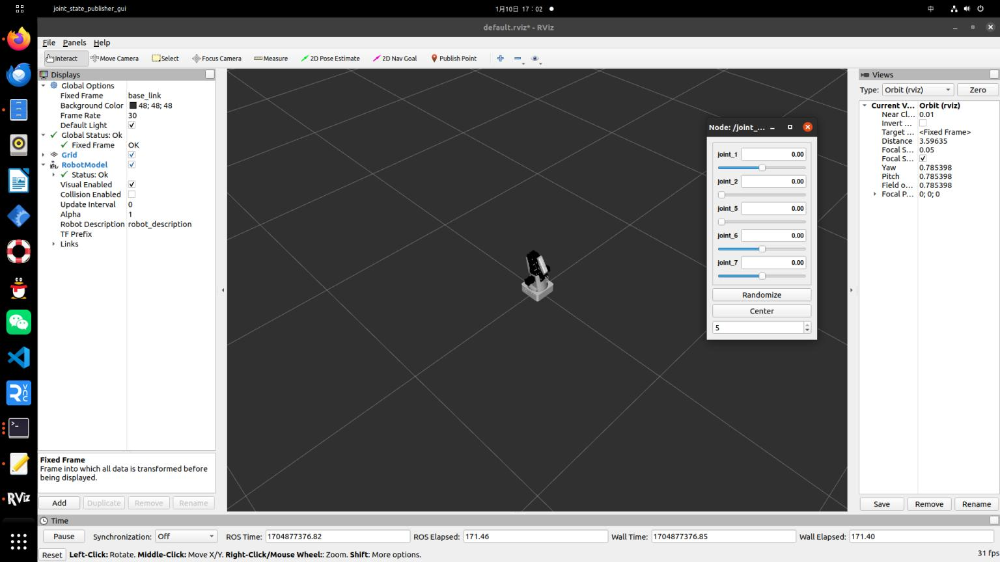

Dobot在Rviz中显示
为了在Rviz中展示Dobot机械臂，我们需要按照以下步骤操作：
首先，您需要创建一个新的ROS工作空间，命名为
dobot_ws，随后在这个工作空间中创建一个名为dobot的功能包。然后，创建必要的文件夹，包括
launch、urdf、meshes等。这里直接导入官方提供的功能包即可。最后，在
launch文件夹中创建一个名为dobot.launch的launch文件，内容如下：
<launch>
<param name="robot_description" textfile="$(find dobot)/urdf/dobot.urdf" />
<node pkg="rviz" type="rviz" name="rviz" />
<node pkg="robot_state_publisher" type="robot_state_publisher" name="robot_state_publisher" />
<node pkg="joint_state_publisher" type="joint_state_publisher" name="joint_state_publisher" />
<node pkg="joint_state_publisher_gui" type="joint_state_publisher_gui" name="joint_state_publisher_gui" />
</launch>
启动命令
roslaunch dobot dobot.launch
此时你可以在Rviz中看到Dobot机械臂的模型了,并可以通过插件控制各关节移动
